Cada panelista crea sus propios descriptores y, para cada uno, ordena todas las copas de menos a más. Según Delarue (cap. 7 de Varela y Ares, 2014).
PanelPersonas con experiencia en describir (enólogos, panel semi-entrenado); 5–10 alcanzan. No necesita entrenamiento en atributos comunes.MuestrasTodas juntas, identificadas con letras (A, B, C…) sorteadas entre los vinos e iguales para todos. Sin Williams. Hasta 26 copas, duplicados incluidos.SesionesLo habitual es una; cada repetición es una sesión con otro sorteo de letras.DatosPara cada panelista y descriptor, el rango de cada copa (1 = menos intenso). Empates permitidos: reciben el rango promedio.
Qué hace el panelista
Escribe sus descriptores. Prueba todas las copas, comparándolas, y anota los atributos que le permiten diferenciarlas (no hedónicos: nada de “rico” o “feo”).
Puede agregar una definición y cómo evalúa los extremos. Si el estudio tiene una lista de ayuda, la puede desplegar y tocar los términos que le sirvan.
Ordena las copas en cada descriptor. Arrastra las letras con el dedo sobre una línea que va de “menos” a “más”. Si dos copas le parecen iguales, las apila (empate).
También puede tocar una copa y después el lugar. Pasa al siguiente descriptor y puede volver atrás, editar sus descriptores o agregar uno nuevo si descubre otra diferencia.
Revisa y envía la sesión completa.
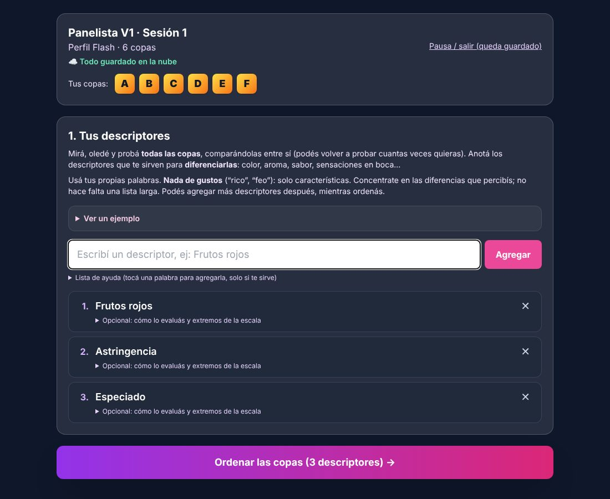
Paso 1: los descriptores propios.
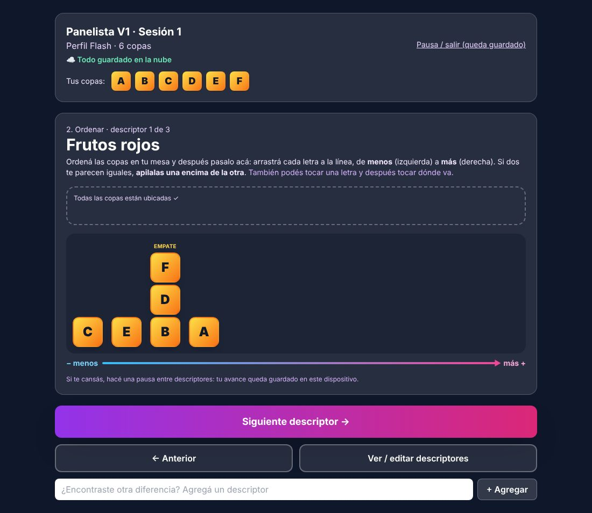
Paso 2: ordenar las copas. Las apiladas (B y E) están empatadas.
Análisis en vivo
Mapa de consenso por Análisis Factorial Múltiple (AFM / MFA): cada panelista es un grupo de variables (sus descriptores), y el mapa resume en qué coinciden.
Los descriptores de cada panelista se dibujan como flechas.
Términos más usados por todo el panel.
Descriptores de cada panelista y su acuerdo con el consenso (coeficiente RV): un panelista con RV bajo ordenó las copas de forma muy distinta al resto.
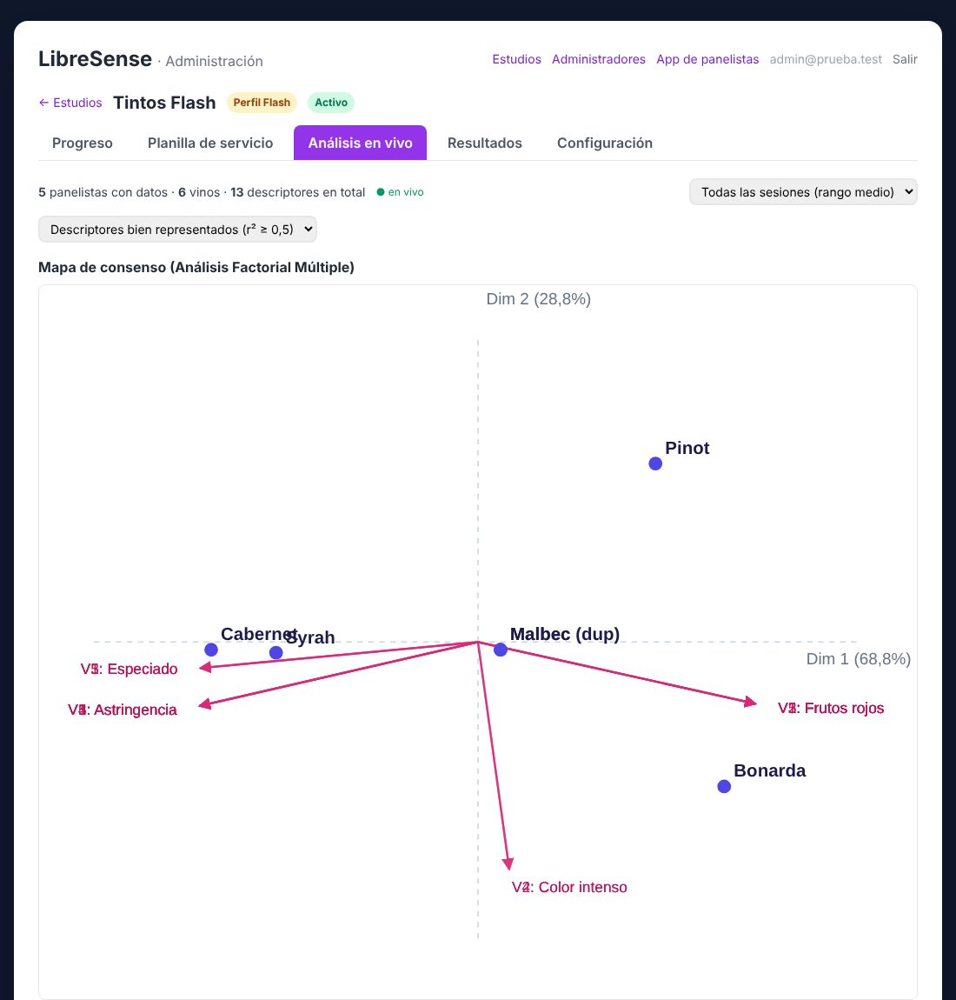
Análisis en vivo de un Perfil Flash: mapa de consenso (AFM) con los descriptores de cada panelista.
Cómo interpretarlo
Los vinos cerca entre sí fueron ordenados de forma parecida en los descriptores de todos los panelistas.
Las flechas de distintos panelistas que apuntan hacia el mismo lado, aunque tengan nombres distintos (“frutos rojos” y “frutado”), describen la misma dimensión:
así se construye el vocabulario común del panel.
Los descriptores con flechas cortas no se relacionan con las dos primeras dimensiones (o el panelista no los usó de forma consistente).
Análisis completo en R
acatania.shinyapps.io/perfilflash agrega: mapa por GPA (Procrustes generalizado) o MFA, en las dimensiones 1-2, 1-3 o 2-3;
elipses de confianza por paneles virtuales (SensoMineR::boot); círculo de correlaciones filtrable; RV y residuo de Procrustes de cada panelista; mapa individual;
clasificación de los vinos (HCPC) con los descriptores que caracterizan a cada grupo; duplicados y sesiones; informe, Excel y código R.
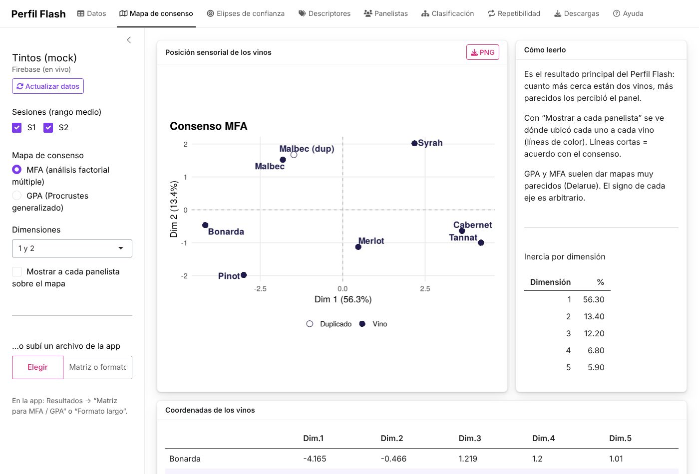
Shiny Perfil Flash: mapa de consenso.
Consejos del capítulo 7
Los descriptores son del panelista: no se corrigen ni se unifican antes del análisis; el AFM se encarga de encontrar lo común.
Con pocos panelistas (menos de 4) el mapa es inestable.
Más que la cantidad de descriptores importa que cada uno diferencie las copas: un descriptor donde todas quedan empatadas no aporta.
10Napping (mapeo proyectivo)
Cada panelista ubica las muestras en una hoja: las que percibe parecidas, cerca; las distintas, lejos. El criterio lo decide él. Según Dehlholm (cap. 9 de Varela y Ares, 2014).
PanelEntrenado o consumidores; en la bibliografía, de 8 a 80 personas. Con consumidores, más.MuestrasAl menos 4. Se prueban de a una en orden de Williams (códigos de 3 cifras) y se ubican en la misma hoja.HojaRectangular 60 × 40 cm (Napping), cuadrada 60 × 60 cm o redonda de 40 cm.DatosCoordenadas X, Y de cada muestra, en cm desde la esquina inferior izquierda. Opcional: palabras para cada muestra.
Variantes
Global: una hoja, criterio libre. Es la forma clásica.
Parcial: una hoja por foco (por ejemplo aspecto, aroma, boca), una después de la otra, mirando solo ese aspecto. Hasta 6 focos.
Palabras (Ultra Flash Profile): después de ubicar, el panelista escribe algunas palabras para cada muestra. Opcionales, obligatorias o ninguna.
Mismo orden para todos, con letras (uso didáctico): sin Williams; todos prueban en el orden de la lista y las muestras se identifican con A, B, C… como en el Perfil Flash.
Forma de la hoja: influye. En la rectangular se tiende a dar más importancia a la dirección horizontal; la cuadrada y la redonda son más neutrales.
Qué hace el panelista
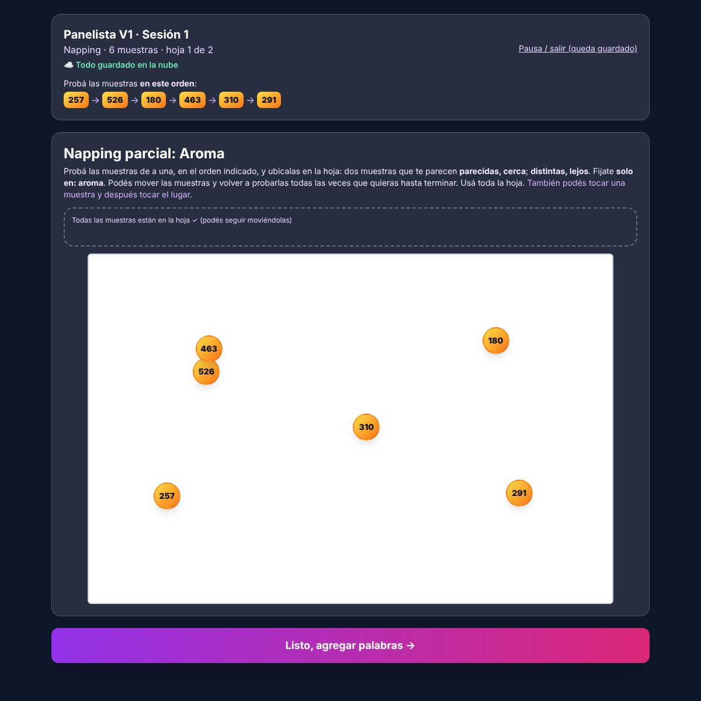
La hoja: las muestras se arrastran desde la bandeja.
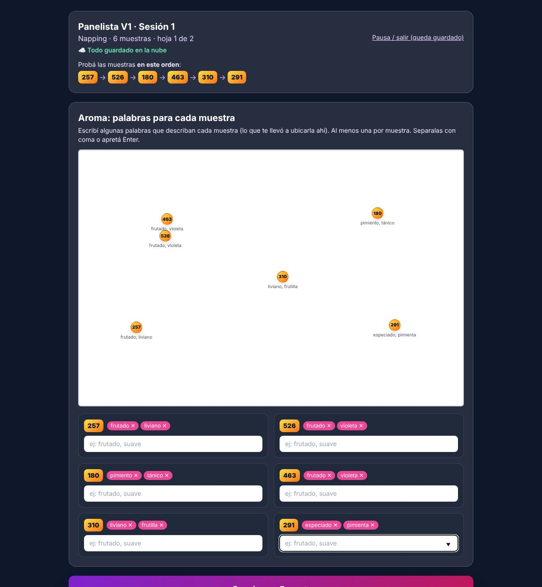
Palabras para cada muestra.
Prueba las muestras en el orden indicado y las arrastra a la hoja (o toca una muestra y luego el lugar). Puede moverlas y volver a probarlas todas las veces que quiera.
La consigna es usar toda la hoja. Después escribe las palabras, revisa y envía.
Análisis en vivo
Mapa de consenso por AFM con las coordenadas sin estandarizar (type = "c"), como propone el capítulo, y las palabras como grupo suplementario (no modifican el mapa).
Palabras más usadas por muestra.
Panelistas: acuerdo de cada uno con el consenso (RV) e índice de desempeño con los duplicados.
Mapas individuales: cómo ubicó cada panelista las muestras.
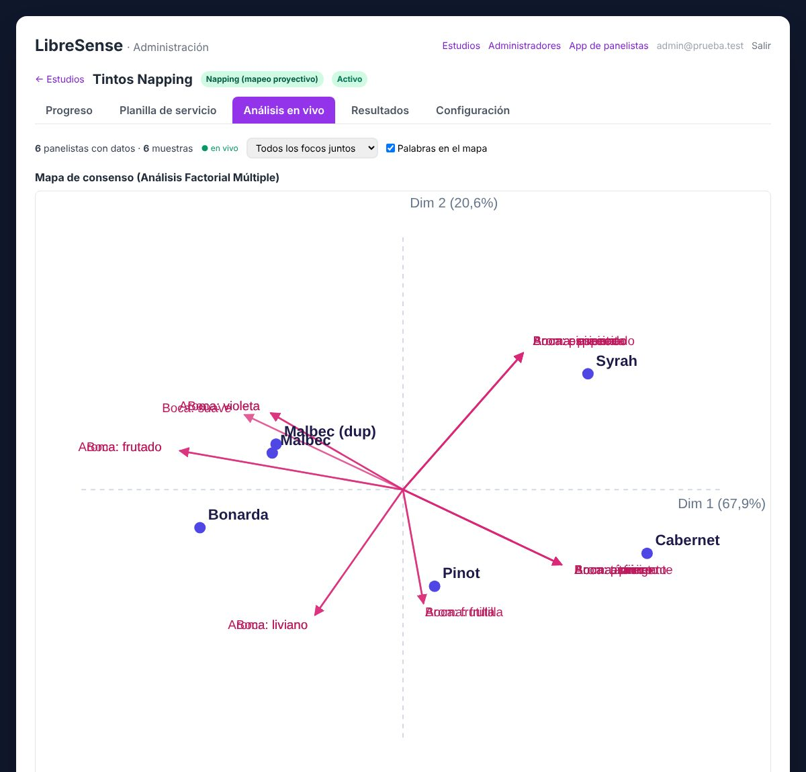
Análisis en vivo de un Napping parcial (foco Aroma): mapa de consenso con las palabras.
Cómo interpretarlo
Las distancias del mapa reflejan cuán distintas percibió el panel a las muestras, pero no dicen en qué: para eso están las palabras.
El Napping es rápido pero poco preciso (“quick and dirty”): conviene interpretar las dos primeras dimensiones y los grupos de muestras, no pequeñas distancias.
Los mapas individuales muestran estrategias distintas: en línea, en L, dispersas, amontonadas o en grupos (Dehlholm, fig. 9.1). Un panelista que amontonó todo
en un rincón usó poco la hoja y aporta poca información.
Análisis completo en R
acatania.shinyapps.io/napping: mapa de consenso con los puntos de cada panelista, elipses de confianza (Dehlholm et al., 2012, o paneles virtuales de
Cadoret y Husson, 2013), palabras (mapa, descfreq, frecuencias, nube), RV y uso de la hoja de cada panelista, hojas individuales y superpuestas al consenso (Procrustes),
clasificación (HCPC), repetibilidad (duplicados, índice de Hopfer y Heymann, sesiones), informe y código R.
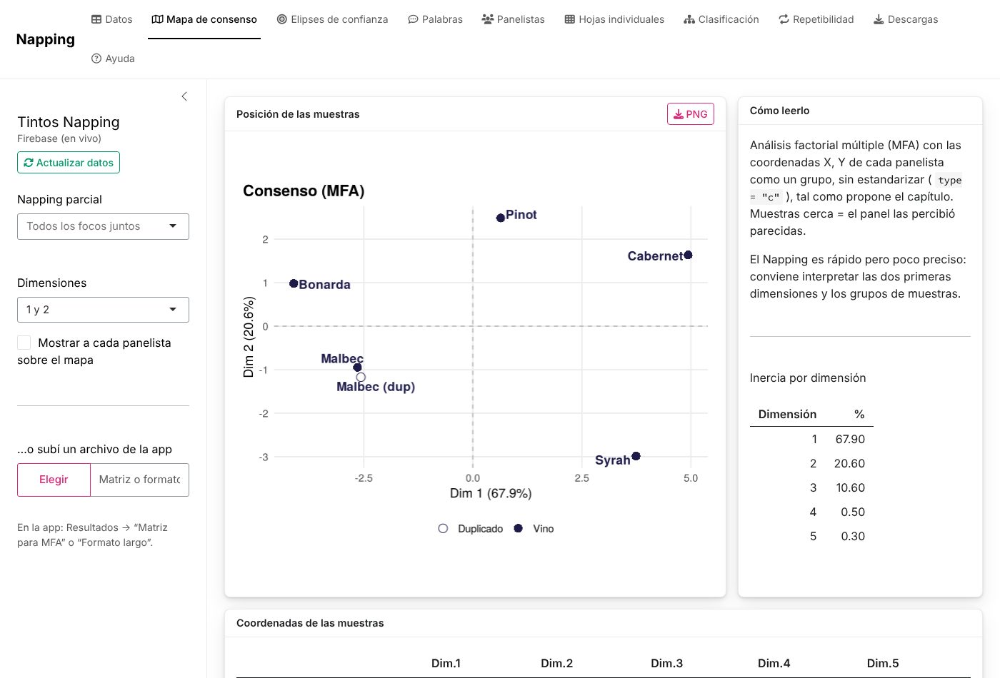
Shiny Napping: mapa de consenso.
11Sorting (agrupamiento libre)
Cada panelista arma grupos con las muestras que le parecen parecidas, con el criterio que quiera, y puede describir cada grupo.
Según Chollet, Valentin y Abdi (cap. 8 de Varela y Ares, 2014).
PanelEntrenado o consumidores; al menos 15–20 personas para un mapa estable.MuestrasTodas juntas, con códigos de 3 cifras y un orden de cata sugerido (Williams). Lo habitual: 6–20. Mínimo 4.ReglasTantos grupos como quiera y de cualquier tamaño, pero no todas en un grupo ni cada una sola.DatosEl número de grupo de cada muestra para cada panelista y, si se pidieron, las palabras de cada grupo.
Qué hace el panelista
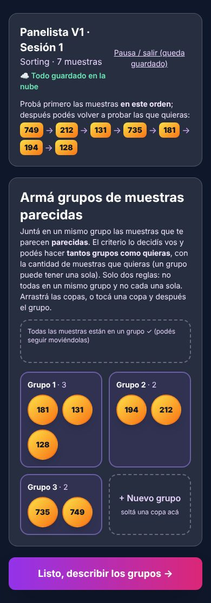
Armar los grupos arrastrando las copas.
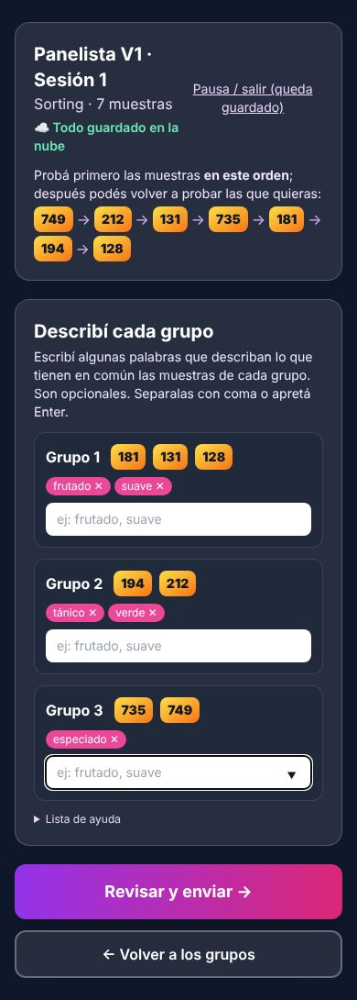
Describir cada grupo con palabras.
Prueba las muestras (primero en el orden sugerido, después las que quiera) y arrastra cada copa a un grupo o a “+ Nuevo grupo”. En el celular también puede tocar la copa y después el grupo.
Puede rearmar los grupos todas las veces que quiera; lo hecho queda guardado si sale. Si intenta seguir con todas las copas juntas o cada una sola, la app se lo indica.
Después describe cada grupo (lo que tienen en común las muestras), revisa y envía.
Análisis en vivo
Mapa de las muestras: MDS clásico (como cmdscale) sobre la disimilitud “1 − proporción de panelistas que juntó cada par”. Las palabras se ubican en el promedio de las muestras donde se usaron.
Grupos de muestras (clasificación jerárquica), con la cantidad de grupos que elijas.
Co-ocurrencias: % de panelistas que puso cada par de muestras en el mismo grupo.
Palabras más usadas por muestra, duplicados (% de panelistas que lo juntó con su original) y los grupos de cada panelista con sus palabras.
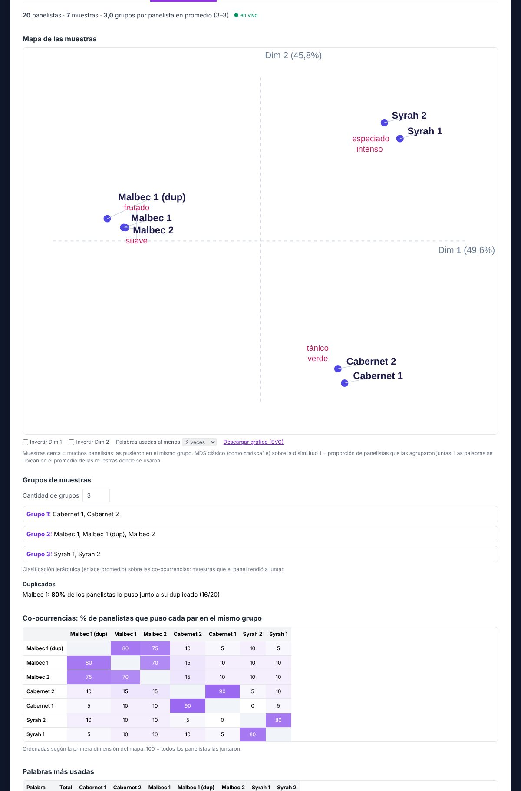
Análisis en vivo de un Sorting: mapa, grupos de muestras, duplicados y co-ocurrencias.
Cómo interpretarlo
Dos muestras cerca en el mapa fueron puestas juntas por muchos panelistas. La tabla de co-ocurrencias da el número exacto.
Los panelistas suelen agrupar por criterios distintos (color, aroma, cuerpo, calidad): el mapa muestra en qué coinciden. Las palabras explican por qué se formaron los grupos.
Panelistas que hicieron solo 2 grupos con muchas muestras suelen haber separado por un único criterio y aportan poca información.
Resultados y análisis completo en R
En Resultados están la matriz de grupos (una fila por muestra, una columna por panelista; el formato de FactoMineR::MCA), la matriz con palabras
(para SensoMineR::fast), las co-ocurrencias, el formato largo y el código R.
acatania.shinyapps.io/sorting ofrece el mapa con tres métodos —correspondencias múltiples (Cadoret, Lê y Pagès, 2009),
DISTATIS (Abdi y colaboradores, 2007) y MDS—, elipses de confianza por bootstrap de panelistas, clasificación de las muestras, palabras que caracterizan a cada muestra y a cada grupo,
el peso de cada panelista en DISTATIS (los que coinciden más con el resto pesan más), el parecido entre panelistas, duplicados, sesiones, informe y código R.